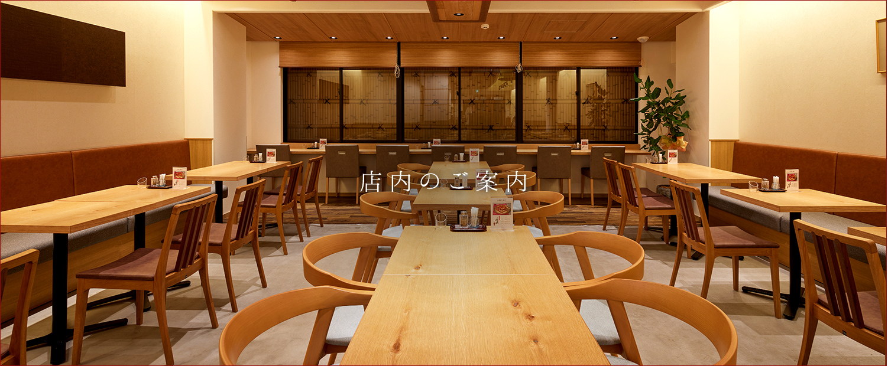
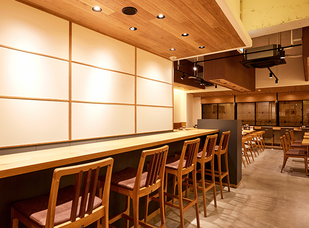
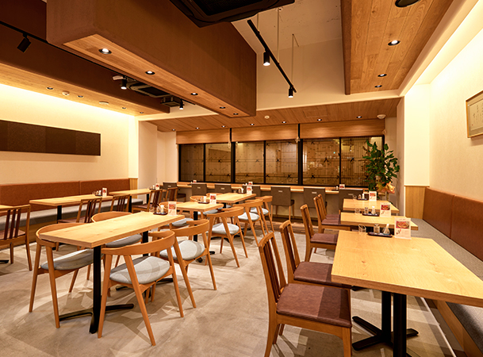
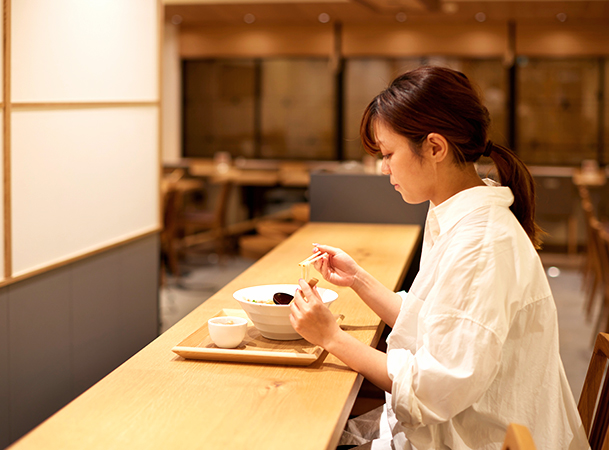

カウンター席とテーブル席を設けた温かな雰囲気の店内は、開放感がありのんびりと寛げる雰囲気。ご家族でのお食事や女性お一人様でも気兼ねなくお過ごしいただけます。ランチとしてらーめんを召し上がった後に和スイーツとお茶をまったり楽しんだり、京都観光の合間に休憩がてらカフェとしてのご利用も歓迎です。
京都の老舗和菓子店「京阿月」が手掛ける京阿月つるりんでは、京都ゆかりの和菓子を店頭販売しております。京阿月の銘菓阿月・栗阿月、名物こぼんちゃんをはじめ、阿月つるりん開店記念商品の“MOCHIDORA もちどら”や“みつまめ”など、こだわりの甘味をご用意。お食事後にお土産としてお買い求めいただくのはもちろん、お持ち帰り飲みのご利用もお気軽にどうぞ。